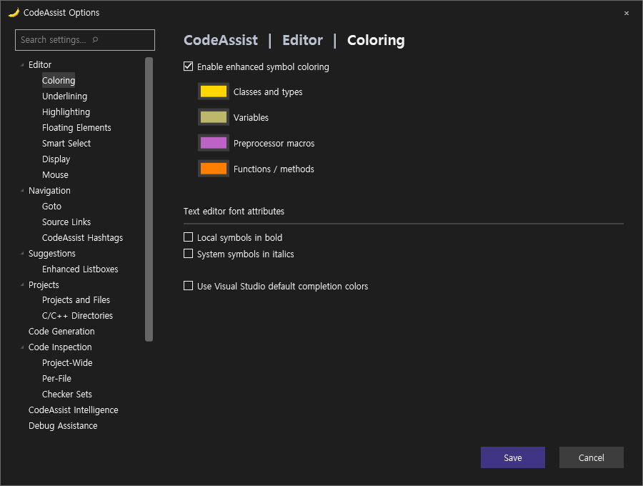
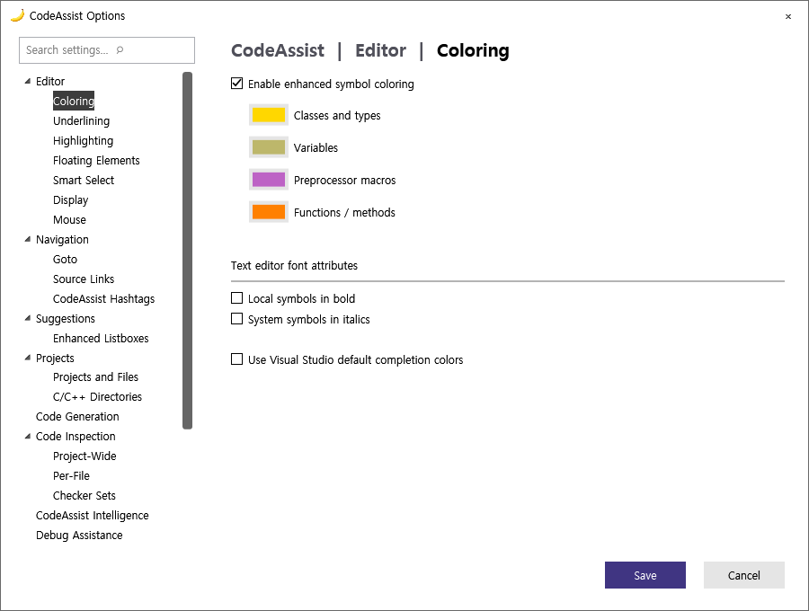
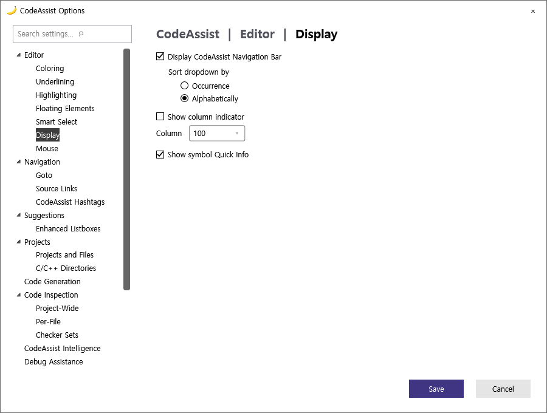
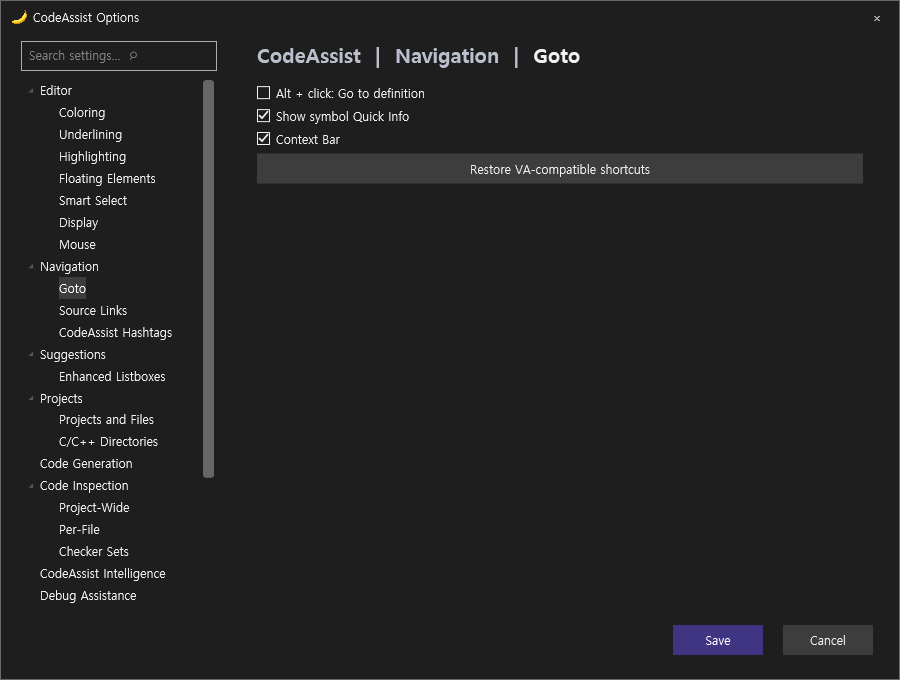
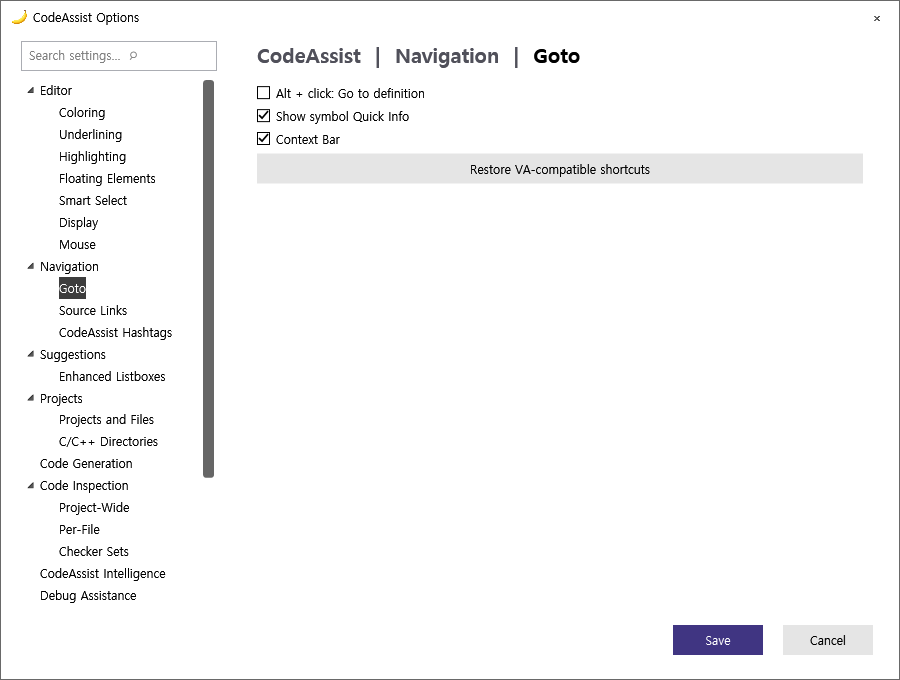
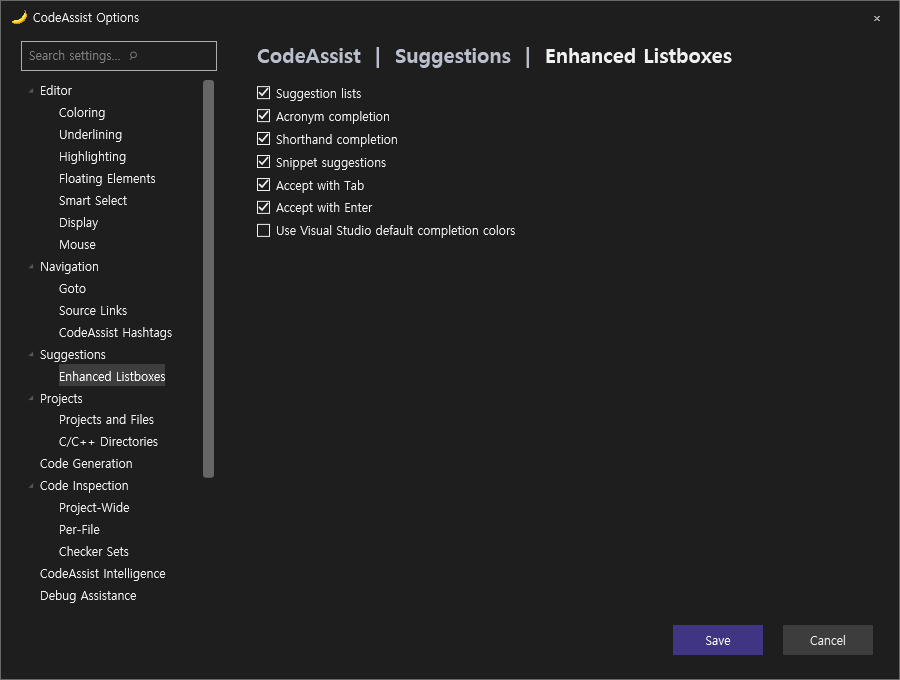
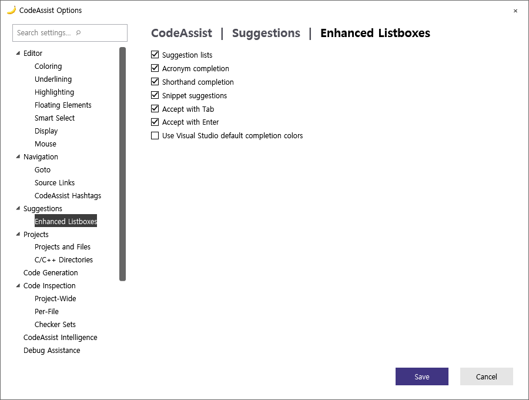

Tracefolio REPORTS & ISSUES
Tracefolio REPORTS & ISSUES0.0.90 UI·기능 자동 점검
기존 기록 이전원문에 기록된 작업 내용과 당시 검증 범위를 정리한 보관 기록입니다.
당시 보고서의 해당 작업 범위. 현재 제품 재실행 또는 전체 완수 판정이 아님.
CodeAssist 0.0.90 UI·기능 자동 점검
0.0.90 UI·기능 자동 점검
UI 픽셀 유사도 74.03% · 비교 가능한 26/66개 분류(39.39%). 이전 74.02%와 수치 차이는 0.01%p뿐이며 전체 UI가 크게 같아졌다는 의미가 아닙니다.
최신 CA 전체 카탈로그 108개 + 추가 14개 = 122/122 시나리오 실행. 옵션 17/17 페이지 관찰. 팝업 열기·취소는 기능 검증 통과가 아닙니다.
| 검증 | 결과 |
|---|---|
| 코드·회귀 테스트 | 272/272 통과(100%) · VA 동기화율과 별도 |
| 기존 명시적 기대값 검사 | 4/5 일치(80%) · 주석 이어쓰기 꺼짐 상태에서 기대 불일치 |
| 설정을 켠 실제 편집 재검사 | 2/3 일치(66.67%) · 주석 이어쓰기, 점→화살표 통과 / 타입 대소문자 교정 실패 |
| 보조 다크·라이트 검사 | 영어 4페이지 × 2테마 = 8개 독립 WPF 렌더·열린 뷰 리소스 전환 통과. 실제 IDE 테마 조작은 아님. |
| 배포 패키지 | VS2019·최신 계열 빌드 2/2. 최신 계열 포함 바이너리 6개 일치, 키 바인딩 등록 24개 확인. 물리 키 입력 검증과 별도. |
수정 전후: 멤버 목록
함수·필드 종류를 목록에 전달해 색상과 아이콘을 적용하고, 열 제목을 심볼·정의로 수정했습니다. 함수 서명은 선언 경계에서 끊어 뒤의 세미콜론·중괄호가 붙지 않도록 수정했습니다.
0.0.89 실제 VS
[](../assets/imports/docs/validation/debug-0.0.90/member-before.png)
0.0.90 실제 VS
[](../assets/imports/docs/validation/debug-0.0.90/CA-feature-005-dialog.png)
전체 대조·원본 근거
108개 VA·CA 대조 갤러리 · 122개 원본 실행 기록 · 검사별 판정 · 설정 통제 후 기대값·실제값 · 272개 테스트 TRX
VA·CA 옵션 구성 조사 — 17페이지
실제로 읽은 체크박스·라디오·입력 컨트롤 이름입니다. 한국어 번역을 영어로 정규화했습니다. 문구 차이·다른 컨트롤 종류도 불일치로 잡히므로 아래 목록만으로 미구현 개수를 단정하지 않습니다. 기존 VA 실화면과 최신 CA 실화면 기준입니다.
Goto · VA 명명 컨트롤 6 / CA 4
VA
Goto
Goto Related
Prefer implementation on Goto
Project
Select symbol on Goto
Solution
CA
Alt + click: Go to definition
Context Bar
Search settings
Show symbol Quick Info
Highlighting · VA 명명 컨트롤 11 / CA 7
VA
Background color
Highlight current line with:
Highlight matching words when caret is in comments and strings
Highlight matching { and }
Highlight mismatching { and }
Highlight results of Quick Find and Find in Files
Highlight solution file paths in build output window (C/C++)
Highlight write and read references to symbol under cursor
Highlight write references using
Ray lines
Thin frame
CA
Highlight current line
Highlight find results
Highlight matching braces
Highlight mismatching braces
Highlight output filenames
Highlight references under caret
Search settings
Display · VA 명명 컨트롤 16 / CA 6
VA
Alphabetically
Bottom
Display VA Navigation Bar:
Display indicator after column
Format doxygen comments in Quick Info tooltips
Format enhanced expansion
Keep both original and enhanced expansions
Occurrence
Show Quick Info tooltips for more symbols
Show comments from source files when available
Show tooltips for braces and structural keywords
Switch to integrated main menu
Top
Use '/' in navigation bar for include paths
Use enhanced macro expansion
Use last active document context for miscellaneous files
CA
Alphabetically
Display VA Navigation Bar
Occurrence
Search settings
Show column indicator
Show symbol Quick Info
VA Hashtags · VA 명명 컨트롤 3 / CA 1
VA
Allow VA Hashtags that consist solely of the alpha characters of hexadecimal values
Allow hyphens in VA Hashtags
Display global commands in the context menu of the VA Hashtags tool window
CA
- Search settings
Editor · VA 명명 컨트롤 20 / CA 16
VA
(
/
Convert dot to -> if operator -> is overloaded
Convert dot to -> in C/C++
Display paste menu with
Double effective rate of key repeat
Extend multi-line comments
Format after paste
Insert after m and Shift
Insert () and closing } ) ] "
Insert a space when toggling a line into a comment
Repair case
Surround Selection via character toggles
With VA Snippets
after a blank line
on the next line
on the same line
{
CA
(
/
Convert pointer dot to arrow
Extend multi-line comments
Format after paste
Insert () and closing brackets and quotes
Insert a space when toggling a line into a comment
Insert underscore after m and Shift
Repair type name case
Search settings
Surround Selection via character toggles
after a blank line
on the next line
on the same line
{
Enhanced Listboxes · VA 명명 컨트롤 11 / CA 8
VA
Additional characters
Allow Acronyms and Shorthand
Bold non-inherited members
Default Intellisense
Display filtering toolbar when hovering
Enter
List non-inherited entries first
Prefer Acronym matches
Shrink as you type
Tab
Visual Assist
CA
Accept with Enter
Accept with Tab
Acronym completion
Search settings
Shorthand completion
Snippet suggestions
Suggestion lists
Use Visual Studio default completion colors
Coloring · VA 명명 컨트롤 9 / CA 5
VA
Enable Enhanced Syntax Coloring
Listboxes
Object Browser
Show local symbols in bold
Show system symbols in italics
Text Editors
Tooltips
VA Navigation Bar
Views
CA
Enable enhanced symbol coloring
Local symbols in bold
Search settings
System symbols in italics
Use Visual Studio default completion colors
Underlining · VA 명명 컨트롤 2 / CA 2
VA
Underline spelling errors in comments and strings using
Underline unrecognized symbols using
CA
Enable basic file diagnostics
Search settings
Project-Wide · VA 명명 컨트롤 5 / CA 5
VA
Confirm before applying all listed quick fixes
Parse what is in the editor before you save
Show the Stats tab
Show the VA Code Inspection tool window when a question needs an answer
Skip the Unreal Engine project when including all projects
CA
Ask in the notification bar
Disable inspections
Per-file inspection
Project-wide basic inspection
Search settings
Per-File · VA 명명 컨트롤 5 / CA 2
VA
Enable while debugging
Even when on battery power
Reparse automatically
Show ticks in vertical scroll bar
Underline/dim code issues
CA
Enable per-file inspection
Search settings
Code Generation · VA 명명 컨트롤 3 / CA 1
VA
Include default parameter values in generated C/C++ implementations
Insert open brace on new line during Introduce Variable and Add Braces
Maintain order in header and source files for generated C/C++ implementations
CA
- Search settings
Debug Assistance · VA 명명 컨트롤 3 / CA 2
VA
$(SolutionDir).va\
%APPDATA%\VisualAssist\
Enable debugger integration required by VA Step Filter for native C/C++
CA
Search settings
Step filter enabled
Source Links · VA 명명 컨트롤 2 / CA 3
VA
Enable Source Links
Show action
CA
Enable
Regular expression
Search settings
Projects and Files · VA 명명 컨트롤 6 / CA 1
VA
Display project nodes in Find References results
Display project nodes in Rename dialog references lists
Enumerate project references thoroughly
Parse files without extensions as headers
if Solution is empty
if Solution is not empty
CA
- Search settings
Mouse · VA 명명 컨트롤 4 / CA 2
VA
Display help content on hover in options dialog
Execute
Override Ctrl+Shift+Wheel in text editor with
Override Ctrl+Wheel in text editor with
CA
Alt + click: Go to definition
Search settings
C/C++ Directories · VA 명명 컨트롤 0 / CA 1
VA
CA
- Search settings
Performance · VA 명명 컨트롤 6 / CA 1
VA
Do not parse files excluded by .vscode\settings.json
Enable multithreaded parsing
Limit the maximum number of concurrent threads to
Parse all files when opening a project
Use alternate directory for symbol database
Watch for externally modified files and reparse when necessary
CA
- Search settings
보조 테마 렌더
Coloring
영어 Dark · 독립 WPF
[ 
영어 Light · 독립 WPF
[ 
Display
영어 Dark · 독립 WPF
[](../assets/imports/docs/validation/debug-0.0.90/preview-1-Dark.png)
영어 Light · 독립 WPF
[ 
Goto
영어 Dark · 독립 WPF
[ 
영어 Light · 독립 WPF
[ 
Enhanced Listboxes
영어 Dark · 독립 WPF
[ 
영어 Light · 독립 WPF
[ 
미완료·제한
타입 대소문자 자동 교정은 켠 상태에서도 실패했습니다. Display·Quick Info 등 VA의 세부 옵션, 리팩터링 전용 동작, 물리 단축키, 모든 자동완성·툴바·테마 상태의 동등성은 아직 완료하지 않았습니다. 최신 전체 기능 동기화율을 산출할 근거는 부족합니다.
자동 승인 검토가 일반 VS 프로필에서 추가 VA fixture 실행을 거부했습니다. 일반 VS·Unreal 프로젝트에 영향을 줄 위험이 사유였습니다. 우회하지 않고 기존 검증 VA 화면을 사용했습니다. 일반 VS는 기존 버전이며 최신 0.0.90은 Exp에만 적용했습니다.
최신 계열 설치 파일 · VS2019 설치 파일
제안 시간: 10분 · 실제 소요: 8분 46초 · 2026-10-18 11:41:04 KST. XERJ 사용 — 현재 소스·실행 근거 확인.
레이아웃·디자인·기능·단축키 재분석: 픽셀 점수와 구분
레이아웃·디자인·기능·단축키 재분석: 픽셀 점수와 구분
원문과 편집 이력
- 원문 SHA-256:
b1b38d9e36bff72a4eb7d2332f77c7cd3ea17278de56be2a0580cab330f9c64a - 표시 날짜는 원본 파일의 수정 시각입니다. 작업 완료 시각은 원문에 있는 값을 기준으로 확인합니다.